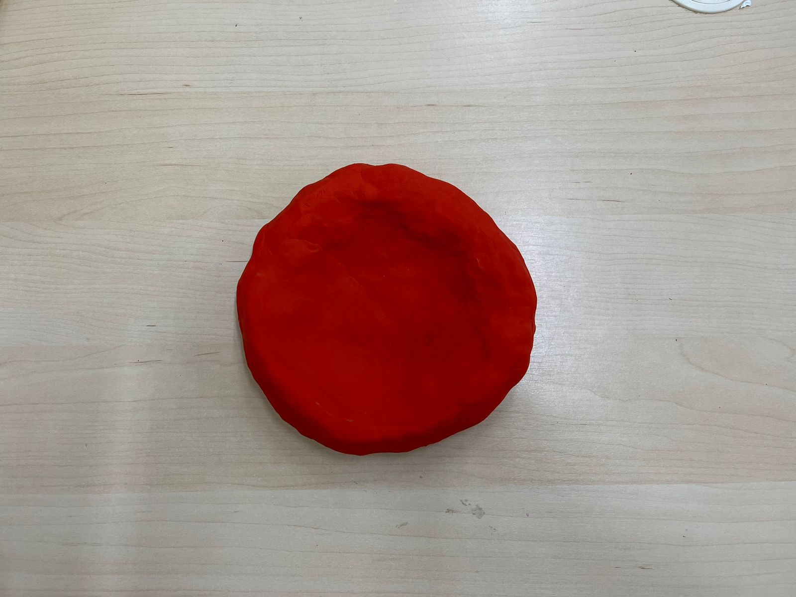
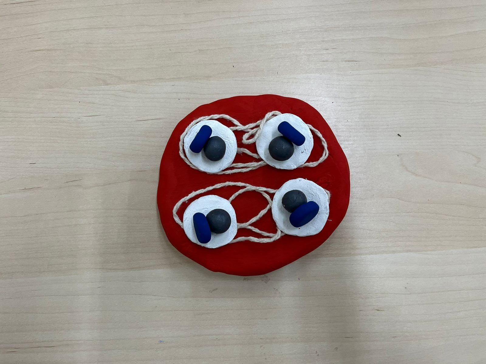
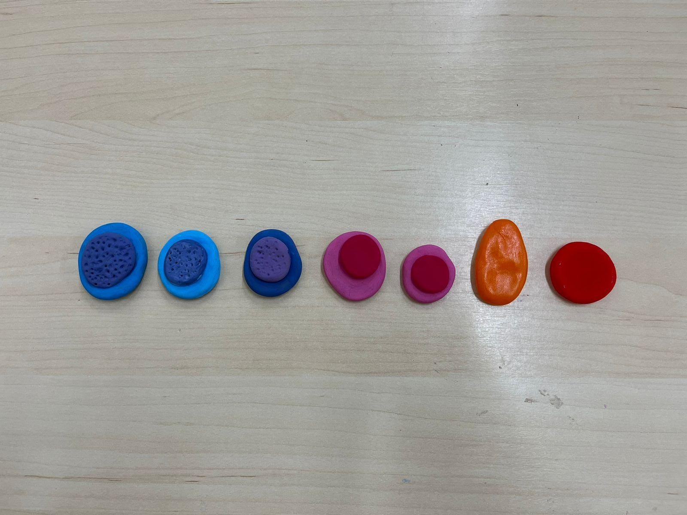

As hemácias são as células de maior quantidade presentes no plasma sanguíneo e dão a cor avermelhada a ele. Assim que elas são produzidas (na medula óssea), perdem o núcleo e a maioria de suas organelas, o que explica a existência de seu formato bicôncavo e de flexibilidade, além do seu curto ciclo vital, de, em média, 120 dias. E em seu interior, há proteínas denominadas hemoglobinas, que possuem quatro subunidades contendo um grupo prostético chamado heme, cada um contendo um átomo de ferro (Fe2+).
Sua principal função consiste no transporte de gases (O2 - capturados nos alvéolos pulmonares, e CO2 - subproduto da respiração celular das células do corpo). Isso só é possível graças à sua fisiologia bicôncava, que atua como encaixe para os gases; e à hemoglobina, pois o ferro presente nelas atrai o gás oxigênio (O2) resgatado na respiração pulmonar e levando até os tecidos para que eles possam realizar a respiração celular.
Vale ressaltar que o gás carbônico (CO2) também pode passar pelo processo de formação de bicarbonato (HCO3-) a partir de uma enzima (anhidrase carbônica) e água, presentes no interior das hemácias, fazendo com que ele se dissolva no sangue. Esse processo é revertido quando o sangue chega nos alvéolos pulmonares, onde volta a ser gás carbônico e é liberado (CO2). OBS: uma parte do gás carbônico não é transportado da forma descrita, mas sim da mesma forma que o oxigênio.
Ciclo Vital das Hemáceas
As células-tronco hematopoiéticas, localizadas na medula óssea, são a base para a formação de todas as células do sangue, incluindo as hemácias. Elas permanecem na medula óssea, onde se autorrenovam e produzem células progenitoras (célula progenitora mielóide comum e a célula progenitora eritróide). O processo de formação das hemácias é estimulado pelo hormônio eritropoietina, que age principalmente nas células progenitoras eritróides já comprometidas com essa linhagem.
Proeritroblastos
São as primeiras células identificáveis da linhagem eritróide, contendo um núcleo grande e organelas citoplasmáticas, não possuindo função efetiva no transporte do oxigênio; ainda se encontram na medula óssea.
Eritroblastos basofílicos
Surgem a partir de divisões celulares dos proeritroblastos e é onde se inicia a síntese efetiva de hemoglobina; o citoplasma é basofílico (azul) devido a abundância de RNA ribossômico e ainda não transporta oxigênio; ainda se encontram na medula óssea.
Eritroblastos policromáticos
A síntese de hemoglobina é continuada, o citoplasma adquire coloração rosa devido à produção de hemoglobina e diminuição do RNA; ainda não é funcional; ainda se encontram na medula óssea.
Eritroblastos ortocromáticos
A hemoglobina está quase totalmente sintetizada e a célula inicia o processo de enucleação (retirada do núcleo) para que esta se torne mais flexível e, consequentemente, apta a transportar oxigênio; ainda se encontram na medula óssea.
Reticulócitos
são as primeiras células anucleadas da linhagem; já possuem a capacidade limitada de transportar oxigênio; ainda possuem algumas organelas mas já podem ser encontradas na corrente sanguínea.
Hemácias Maduras
